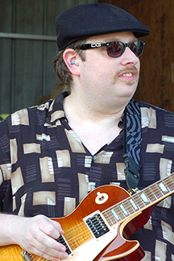
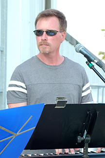
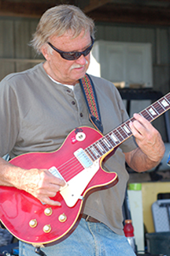
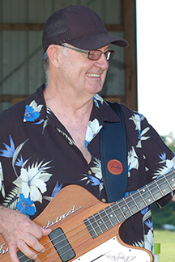
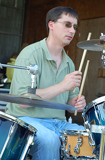
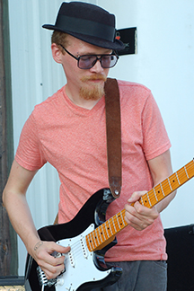

Nate Frangowlakis
Guitar/Vocals
Nate has played with Kick Start, Whisky Train, So There, ZFO, and is one of the founding members of Past Forward (ca. 2004). He's opened for Kix, LA Guns, UFO, Bad Hair Day, and Eddie Money. Nate plays a Jimmy Page Les Paul through a host of amps and effects, and sounds like Billy Gibbons.
Dave Unger

Keyboard/Vocals
Dave has played and sung in various groups including Bottle of Blues, Cry Monday, Rubberband, Blue Blazes, Surrender, and Past Time. He started playing keys and singing with Past Forward in 2010. His influences cover the range of classic rock, and extend to alternative, indie, blues, and classics.
Bob Heil

Guitar
Bob has played with Pine Street Station and The Elliott Brotheres in the MD, PA, DE, and VA circuits, playing rock from the 60s and 70s on his Les Paul Custom. He joined Past Forward in January, 2010 and has been rocking with our setlist of 60s through 80s blues and rock ever since.
Dave Olivier

Bass Guitar
Dave has played with So There and ZFO and is one of the founding members of Past Forward. He plays a '72 Thunderbird and a '73 BC Rich through an Ampeg stack. Some of his influences are Tommy Shannon, Geezer Butler, Dusty Hill, and Daryl Jones.
Dave Zuzin

Drums
Dave has played with Rob Zuzin and Hot Rod Truck, So There, and ZFO. He studied drums and percussion with Mark Jones at the Baltimore School for Drumming. He's influenced by the diverse styles of Neil Peart, Carl Palmer, Dave Weckl, Billy Cobham, and Tony Williams.
Zac Anger

Guitar/Vocals
Zac has performed and recorded with The Heretics, Hayley Jane, The Snails, The Mayor's Wife, and other south-central PA groups since around 2005. The newest member of Past Forward, Zac's primary setup is an ESP KH-2 through a Digitech workstation.